熱容量、焓、熵與熱力學第三定律
前五章建立了熱力學的理論框架——狀態函數、三大定律、統計詮釋、基本方程式和 Maxwell 關係。第六章是轉向應用的橋樑：它展示如何使用最容易測量的熱力學量——熱容量 $C_P(T)$——來計算任意溫度和壓力下的焓變和熵變。沒有本章的計算方法，第十一章到第十五章的所有反應平衡計算都將缺乏數據基礎。
在本章中，我們將學習：
- Dulong–Petit 定律、愛因斯坦模型、德拜模型——固體熱容的古典、量子、和連續介質理論
- $C_P$ 的經驗多項式 $C_P = a + bT + cT^{-2}$——實際計算的起點
- Kirchhoff 定律——如何從 $C_P$ 數據計算焓變的溫度依賴
- 熱力學第三定律——$S(0\ \text{K}) = 0$ 作為熵的絕對參考點
- 絕對熵的計算——分段積分 $C_P/T$，含相變貢獻和德拜低溫外插
- 壓力對 $H$ 和 $S$ 的影響——何時可以忽略、何時必須考慮
🧭 本章推理地圖
- 可測輸入：由熱卡計得到 $C_P(T)$，並理解低溫熱容為何受量子晶格振動控制。
- 資料模型：用德拜低溫律與經驗多項式把離散測量轉成可積分的 $C_P(T)$ 函數。
- 狀態函數：透過 Kirchhoff 積分得到 $\Delta H(T)$，透過第三定律積分得到 $S^\circ(T)$。
- 材料判斷：把 $\Delta H(T)$ 與 $S^\circ(T)$ 組合為 $\Delta G^\circ(T)$，服務高溫反應、相穩定與壓力效應分析。
6.1 導論（Introduction）
- $C_P(T)$ 是把熱力學理論轉成可計算材料資料的核心輸入。
- 熱容量同時連接微觀晶格振動與巨觀焓、熵變化。
- 第三定律讓熵從「相對變化」升級為「絕對表格量」。
第二章定義了熱容量（$C_V = (\partial U/\partial T)_V$ 和 $C_P = (\partial H/\partial T)_P$），但沒有討論如何獲取這些數據。在實際工作中，$C_P$ 是通過熱卡計（calorimeter）直接測量的——將樣品加熱，記錄所需的熱量隨溫度的變化。這些測量數據是計算 $\Delta H$ 和 $\Delta S$ 的唯一實驗輸入。
本章從兩個切入點探討熱容量：理論（為什麼 $C_P$ 隨溫度變化）和應用（如何使用測量到的 $C_P(T)$ 進行計算）。理論部分展示了古典物理的局限性如何催生了量子理論；應用部分則建立了貫穿後續所有章節的計算方法。
第三定律在本章首次被完整引入——它為熵提供了一個絕對參考點（$S(0\ \text{K}) = 0$），使得計算物質的絕對熵（而非僅是熵變）成為可能。附錄 A 的表 A.3 列出了數百種物質在 298 K 的標準絕對熵——這些數字的每一個都是通過本章描述的方法從 $C_P$ 數據積分得到的。
例題 6.1：為什麼 $C_P(T)$ 是材料熱力學的入口？
若要判斷氧化物在 1200 K 的穩定性，需要 $\Delta G^\circ(1200)=\Delta H^\circ(1200)-1200\Delta S^\circ(1200)$。
$\Delta H^\circ(1200)$ 由 $\int \Delta C_P\,dT$ 修正，$\Delta S^\circ(1200)$ 由 $\int C_P/T\,dT$ 修正。
因此即使最終問題是自由能，最初的實驗入口仍是熱容量。
6.2 熱容量的理論計算（Theoretical Calculation of the Heat Capacity）
- Dulong–Petit 定律是高溫古典極限，不是低溫定律。
- 愛因斯坦模型引入能量量子化，但單一頻率假設使低溫下降太快。
- 德拜模型用連續聲子頻譜給出 $T^3$ 低溫律與材料參數 $\Theta_D$。
Dulong–Petit 定律（1819）
對於固態元素，古典能量均分定理預測每個原子有三個振動自由度，每個自由度有動能和位能兩個二次方項，共六個，每項貢獻 $\frac{1}{2}R$：
這個簡單的規則對室溫下的多數金屬元素驚人地準確。例如：Cu（298 K）：$C_P = 24.44\ \text{J/mol·K}$；Ag：$25.35$；Au：$25.42$——全部接近 $3R$。但 Dulong–Petit 定律無法解釋兩個關鍵現象：
- 低溫失效：當溫度降低時，$C_V$ 不是保持 $3R$，而是單調下降趨近於零。
- 輕元素例外：鑽石（碳）在室溫下的 $C_V$ 只有約 $6\ \text{J/mol·K}$，遠低於 $3R$——因為其德拜溫度 $\Theta_D \approx 2230\ \text{K}$ 遠高於室溫。
愛因斯坦模型（Einstein Model, 1907）
愛因斯坦應用 Planck 的量子假說：固體中的每個原子以相同頻率 $\nu_E$ 獨立振動，但振動能量是量子化的（$\varepsilon = n h \nu_E$）。使用第四章的 Boltzmann 分布導出：
其中 $\Theta_E = h\nu_E/k_B$ 是愛因斯坦特徵溫度。此模型預測了兩個關鍵特徵：
- $T \gg \Theta_E$ 時，$C_V \to 3R$（恢復 Dulong–Petit 極限）
- $T \ll \Theta_E$ 時，$C_V \to 3R(\Theta_E/T)^2 e^{-\Theta_E/T} \to 0$（量子凍結）
愛因斯坦模型的成功在於它解釋了 $C_V$ 為什麼會下降。但它預測的低溫下降速率（指數衰減 $e^{-\Theta_E/T}$）比實驗觀測到的（$T^3$ 冪律）快得多。這是因為愛因斯坦假設所有原子以相同頻率振動——實際固體中原子振動頻率有一個連續的分布。
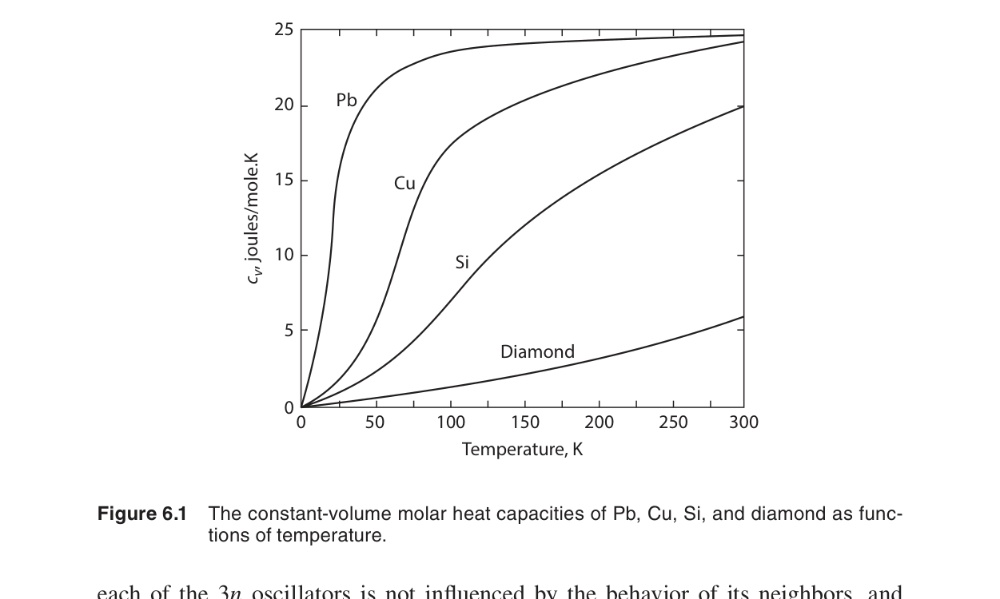
📐 推導 6.1：愛因斯坦模型的 $C_V$ 公式推導
出發點：每個原子是獨立的量子諧振子，能量 $\varepsilon_n = (n + \tfrac12)h\nu_E$。第四章的 Boltzmann 分布給出單個振子處於能級 $n$ 的機率正比於 $e^{-\varepsilon_n/k_B T}$。
步驟 1——單振子配分函數： $q = \sum_{n=0}^\infty e^{-(n+\frac12)h\nu_E/k_B T} = e^{-h\nu_E/2k_B T} \sum_{n=0}^\infty e^{-n h\nu_E/k_B T} = \dfrac{e^{-h\nu_E/2k_B T}}{1 - e^{-h\nu_E/k_B T}}$
步驟 2——平均能量： $\langle\varepsilon\rangle = -\dfrac{\partial \ln q}{\partial (1/k_B T)} = \dfrac{h\nu_E}{2} + \dfrac{h\nu_E}{e^{h\nu_E/k_B T} - 1}$
步驟 3——摩爾熱容（一莫耳原子 = $N_A$ 個振子，每個三維 → $3N_A$ 個諧振子）： $C_V = 3N_A \dfrac{\partial\langle\varepsilon\rangle}{\partial T} = 3R\left(\dfrac{h\nu_E}{k_B T}\right)^2 \dfrac{e^{h\nu_E/k_B T}}{(e^{h\nu_E/k_B T} - 1)^2}$
代入 $\Theta_E = h\nu_E/k_B$ 即得 Eq (6.1)。注意 $T \to \infty$ 時 $C_V \to 3R$（Dulong–Petit），$T \to 0$ 時 $C_V \propto e^{-\Theta_E/T} \to 0$。
德拜模型（Debye Model, 1912）⭐
德拜的關鍵洞察是將固體視為連續彈性介質，振動頻率從零到一個最大值 $\nu_D$ 連續分布。這給出：
其中 $\Theta_D = h\nu_D/k_B$ 是德拜特徵溫度——這是固體物理中最重要的材料參數之一。$\Theta_D$ 反映晶格的剛性：$\Theta_D$ 越高，晶格越硬，高頻振動越困難。
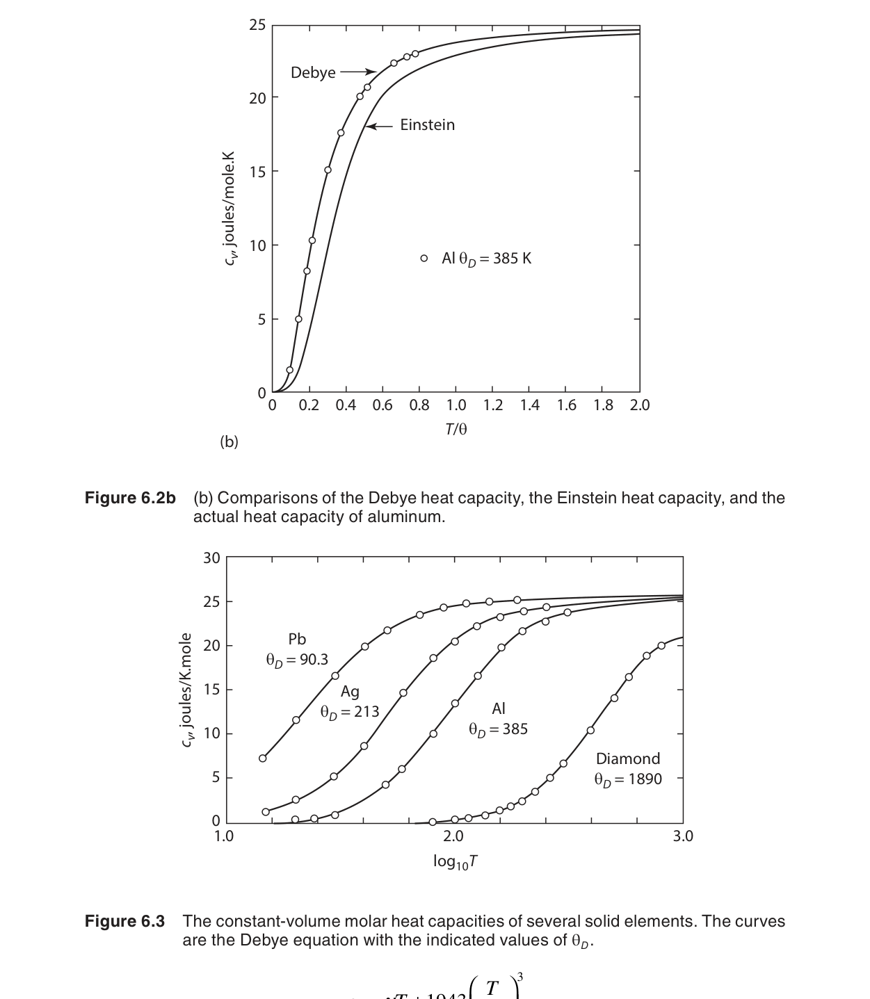
低溫極限（$T \ll \Theta_D$）：積分上限趨近無窮大，積分值為常數 $4\pi^4/15$：
這就是著名的德拜 $T^3$ 定律——低溫下固體的熱容量與 $T^3$ 成正比。這與低溫實驗數據完美吻合，是量子固態物理最早的重大勝利之一。
📐 推導 6.2：德拜模型的 $C_V$ 公式——從連續頻譜到熱容
物理圖像：將固體視為各向同性連續彈性介質。根據彈性波理論，振動頻率 $\nu$ 的態密度為 $g(\nu) = \dfrac{12\pi V}{v^3}\nu^2$（$v$ 為平均聲速，$V$ 為體積）。整個晶體有 $3N$ 個振動模式，因此最大截止頻率 $\nu_D$ 由 $\int_0^{\nu_D} g(\nu)\,d\nu = 3N$ 決定。
步驟 1——態密度歸一化：$\displaystyle \int_0^{\nu_D} \frac{12\pi V}{v^3} \nu^2 d\nu = \frac{4\pi V}{v^3}\nu_D^3 = 3N$ → $\nu_D^3 = \dfrac{9N v^3}{4\pi V}$
步驟 2——總內能：每個頻率 $\nu$ 的量子諧振子平均能量 $\langle\varepsilon(\nu)\rangle = \dfrac{h\nu}{e^{h\nu/k_B T} - 1}$（略去零點能），積分：
$U = \displaystyle \int_0^{\nu_D} \langle\varepsilon(\nu)\rangle g(\nu) d\nu = \frac{12\pi V}{v^3} \int_0^{\nu_D} \frac{h\nu^3}{e^{h\nu/k_B T} - 1} d\nu$
步驟 3——化簡為德拜積分：令 $x = h\nu/k_B T$，$\Theta_D = h\nu_D/k_B$：
$U = 9N k_B T \left(\dfrac{T}{\Theta_D}\right)^3 \displaystyle \int_0^{\Theta_D/T} \frac{x^3}{e^x - 1} dx$
步驟 4——對溫度求導得 $C_V$：
$C_V = \left(\dfrac{\partial U}{\partial T}\right)_V = 9N k_B \left(\dfrac{T}{\Theta_D}\right)^3 \displaystyle \int_0^{\Theta_D/T} \frac{x^4 e^x}{(e^x - 1)^2} dx$
乘以 $R/N_A k_B$ 將 $N k_B$ 轉換為 $R$（每莫耳）即得 Eq (6.2)。
📐 推導 6.3：德拜 $T^3$ 定律（低溫極限）
低溫極限的物理條件：$T \ll \Theta_D$ 時，$x_{\max} = \Theta_D/T \to \infty$。此時德拜積分趨近於一個常數：
$\displaystyle \int_0^{\infty} \frac{x^4 e^x}{(e^x - 1)^2} dx = \int_0^{\infty} \frac{x^4}{e^x - 1} \cdot \frac{e^x}{e^x - 1} dx = \cdots = \frac{4\pi^4}{15}$
此積分的值可通過 Riemann Zeta 函數求得：$\displaystyle \int_0^\infty \frac{x^n}{e^x - 1} dx = n!\,\zeta(n+1)$，而 $\zeta(4) = \pi^4/90$。
代入 Eq (6.2)：
$C_V = 9R \left(\dfrac{T}{\Theta_D}\right)^3 \cdot \dfrac{4\pi^4}{15} = \dfrac{36\pi^4}{15} R \left(\dfrac{T}{\Theta_D}\right)^3$
化簡得 Eq (6.3)：$C_V = \dfrac{12\pi^4}{5} R \left(\dfrac{T}{\Theta_D}\right)^3$。
實用形式：$C_V = \beta T^3$，其中 $\beta = \dfrac{12\pi^4 R}{5\Theta_D^3}$。在低溫熱容量測量中，通常從 $C_P$ vs $T^3$ 圖的斜率直接提取 $\Theta_D$。
| 物質 | $\Theta_D$ (K) | 室溫 $C_P$ (J/mol·K) | 熔點 (K) | 結構 |
|---|---|---|---|---|
| 鉛 Pb | 105 | 26.4 | 601 | fcc |
| 金 Au | 165 | 25.4 | 1337 | fcc |
| 銅 Cu | 343 | 24.4 | 1358 | fcc |
| 鐵 Fe | 470 | 25.1 | 1811 | bcc |
| 矽 Si | 645 | 20.0 | 1687 | 鑽石 |
| 鑽石 C | 2230 | 6.1 | ∼4000 | 鑽石 |
例題 6.2：用德拜溫度判斷室溫熱容是否接近 $3R$
比較 Pb（$\Theta_D=105$ K）與鑽石（$\Theta_D=2230$ K）在 298 K 的熱容。
Pb 的 $T/\Theta_D\approx2.84$，已接近高溫古典極限，所以 $C_P\approx3R$。
鑽石的 $T/\Theta_D\approx0.13$，仍在量子凍結明顯的區域，所以室溫熱容遠低於 $3R$。
6.3 熱容量的經驗表示（The Empirical Representation of Heat Capacities）
- 實際工程計算通常使用實驗擬合的 $C_P$ 多項式。
- 多項式係數只在指定相態與溫度區間有效。
- 把 $C_P(T)$ 表成解析式後，焓與熵積分才能穩定重複使用。
理論模型（愛因斯坦、德拜）在寬溫度範圍內不夠精確——它們需要調整參數且無法捕捉所有細節（如電子熱容、相變前驅效應）。因此，實際熱力學計算中，我們使用從實驗數據擬合的經驗多項式：
不同物質有不同的係數 $a, b, c, d$（見附錄 A 表 A.2）。這個形式在大多數物質的穩定溫度範圍內（從室溫到熔點）精度優於 1%。
為什麼使用 $T^{-2}$ 項而非其他形式？這不是隨意選擇——$T^{-2}$ 來自低溫晶格熱容展開式的下一項（超越德拜積分的 $T^3$ 項）。在高溫端，$T^2$ 項捕捉了非諧效應（anharmonic effects）——原子振動偏離簡諧近似的修正。
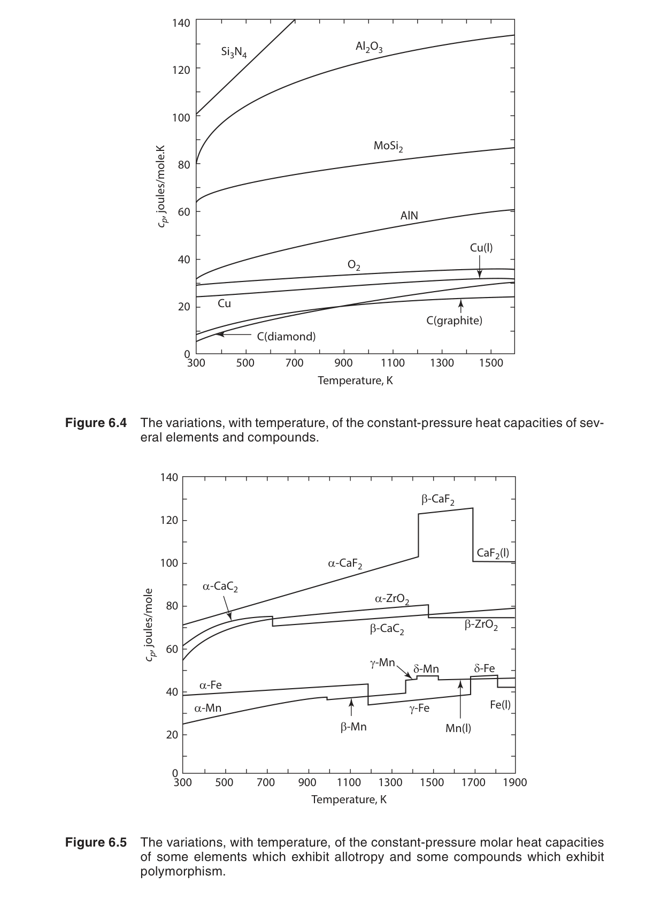
例題 6.3：判斷 $C_P$ 多項式能否直接積分
若某表格給出 Fe(s, $\alpha$) 的 $C_P=a+bT+cT^{-2}$，溫度範圍是 298-1185 K。
計算 298 到 1000 K 的焓修正可直接積分，因為仍在同一相態與有效區間內。
計算 298 到 1600 K 則不行，必須在 1185 K 相變處分段並換係數。
6.4 焓隨溫度與組成的變化（Enthalpy as a Function of Temperature and Composition）
- Kirchhoff 定律說明反應焓的溫度斜率就是 $\Delta C_P$。
- 反應物與產物的熱容量差會累積成高溫焓修正。
- 跨相變時，焓曲線有跳躍，不能只做單一積分。
Kirchhoff 定律
化學反應的焓變隨溫度變化——這是因為反應物和產物的熱容量不同（$\Delta C_P \neq 0$）。Kirchhoff 定律精確描述了這個變化：
積分形式給出從參考溫度（通常是 298 K）到任意溫度 $T$ 的反應焓：
其中 $\Delta C_P = \sum_i \nu_i C_{P,i}$（產物為正、反應物為負）。將 $C_P$ 的經驗多項式代入：
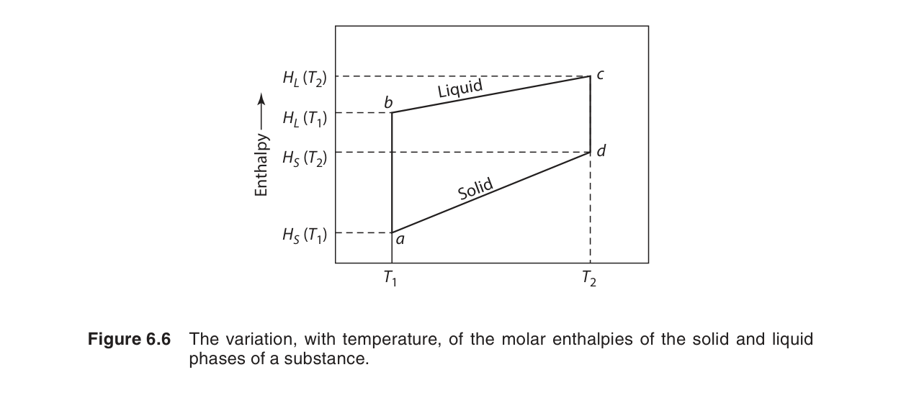
📐 推導 6.4：Kirchhoff 定律的推導
出發點：定義 $\Delta H = H_{\text{產物}} - H_{\text{反應物}}$。對溫度求偏導（定壓）：
$\displaystyle \left(\frac{\partial \Delta H}{\partial T}\right)_P = \left(\frac{\partial H_{\text{產物}}}{\partial T}\right)_P - \left(\frac{\partial H_{\text{反應物}}}{\partial T}\right)_P = C_{P,\text{產物}} - C_{P,\text{反應物}} = \Delta C_P$
這是 Eq (6.5) 的直接來源。積分即得 Eq (6.6)。
從基本定義出發的等價推導：
$H(T,P,\mathbf{n}) = \sum_i n_i \bar{H}_i(T,P)$，其中 $\bar{H}_i$ 為偏摩爾焓。化學反應的 $\Delta H$ 可寫為：
$\displaystyle \left[\frac{\partial (\Delta H)}{\partial T}\right]_P = \frac{\partial}{\partial T}\left( \sum_i \nu_i \bar{H}_i \right)_P = \sum_i \nu_i \left(\frac{\partial \bar{H}_i}{\partial T}\right)_P = \sum_i \nu_i C_{P,i} = \Delta C_P$
實用提醒： Kirchhoff 積分中 $\Delta C_P$ 本身也是溫度的函數（因為 $C_{P,i}$ 是溫度的函數），因此必須代入 $C_P(T)$ 的多項式形式進行積分，不能簡單假設 $\Delta C_P$ 為常數。
跨越相變的處理
如果積分範圍內有相變化（熔化、同素異形體轉變），必須分段積分並加入相變熱：
這是實際計算中最容易出錯的地方——漏掉相變熱會導致巨大的誤差。例如計算鐵從 298 K 升溫到 2000 K（液態）的焓變，必須依次加入：固態升溫（$\alpha$-Fe）→ $\alpha$-$\gamma$ 相變 → 固態升溫（$\gamma$-Fe）→ $\gamma$-$\delta$ 相變 → 固態升溫（$\delta$-Fe）→ 熔化熱 → 液態升溫。五段積分，四個相變熱。
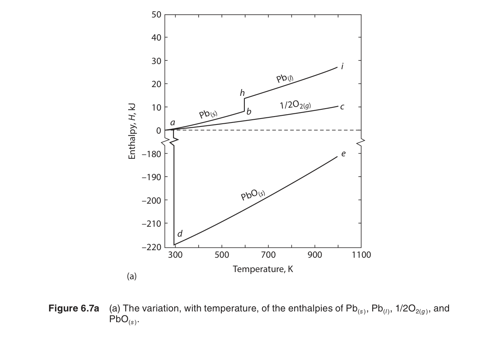
例題 6.4：快速判斷 $\Delta H(T)$ 的變化方向
若反應的 $\Delta C_P>0$，則 $(\partial\Delta H/\partial T)_P>0$，反應焓隨溫度升高而增加。
若 $\Delta C_P<0$，升溫會使 $\Delta H$ 變小。
這個方向判斷常用來先檢查高溫熱化學計算是否合理。
跨章關聯：Kirchhoff 定律與反應平衡（第十一章）
在第十一章中，我們將計算化學反應的標準 Gibbs 自由能變化 $\Delta G^\circ(T)$ 隨溫度的變化：
其中 $\Delta H^\circ(T)$ 正是通過本節的 Kirchhoff 定律 (Eq 6.6) 計算的。將 $\Delta H^\circ(T)$ 和 $\Delta S^\circ(T)$（通過第三定律積分 Eq 6.9 得到）代入上式，即可得到任意溫度下的 $\Delta G^\circ(T)$，進而計算反應平衡常數 $K = e^{-\Delta G^\circ/RT}$。換言之，本章的 Kirchhoff 定律是第十一章所有反應平衡計算的數據基礎——沒有 $\Delta C_P$ 的溫度修正，高溫下的反應方向判斷將完全失去準確性。
6.5 熵的溫度依賴與熱力學第三定律
- 第三定律給出完美晶體的熵零點，使絕對熵表格有意義。
- 絕對熵由 $C_P/T$ 積分而非 $C_P$ 積分得到。
- 相變熵與殘留熵是材料系統中最容易漏掉的修正。
熱力學第三定律的表述
第三定律由 Walther Nernst 在 1906 年提出，經過 Planck 和 Lewis 的完善，最常用的表述為：
這個看似簡單的陳述有深遠的後果。在第三章中，我們只能計算熵的變化 $\Delta S$；有了第三定律，我們可以計算熵的絕對值。附錄 A 表 A.3 中列出的每個物質的 $S^\circ(298)$，都是從 $T = 0$ 開始積分 $C_P/T$ 得到的。
「完美晶體」這個條件至關重要。如果晶體有缺陷（如空位、差排）或殘留無序（如 CO 晶體中分子取向的隨機性），在 0 K 時熵不為零——這稱為殘留熵（residual entropy）。例如，CO 晶體在 0 K 的殘留熵約為 $R\ln 2 \approx 5.76\ \text{J/mol·K}$，因為每個 CO 分子可以取兩個方向。
絕對熵的計算
從 $C_P(T)$ 數據計算任意溫度 $T$ 下的絕對熵：
實務上這個積分分為三個區域處理：
- 極低溫區（$T < 15\ \text{K}$）：$C_P$ 太小無法直接測量。使用德拜 $T^3$ 定律外插：$C_P \approx C_V = aT^3$。$a$ 由最低可測溫度處的 $C_P$ 值確定。此區域的熵貢獻：$S_{\text{low}} = \int_0^{T_{\text{low}}} aT^2\,dT = \frac{1}{3}C_P(T_{\text{low}})$。
- 可測量區（$T_{\text{low}} < T < T_2$）：使用實驗 $C_P$ 數據（或經驗多項式）進行 $\int C_P/T\,dT$ 的數值積分。
- 相變貢獻：在每個一階相變溫度 $T_{\text{tr}}$，加入 $\Delta S_{\text{tr}} = \Delta H_{\text{tr}}/T_{\text{tr}}$。熔化（fusion）和同素異形體轉變（allotropic transformation）都需要加入。
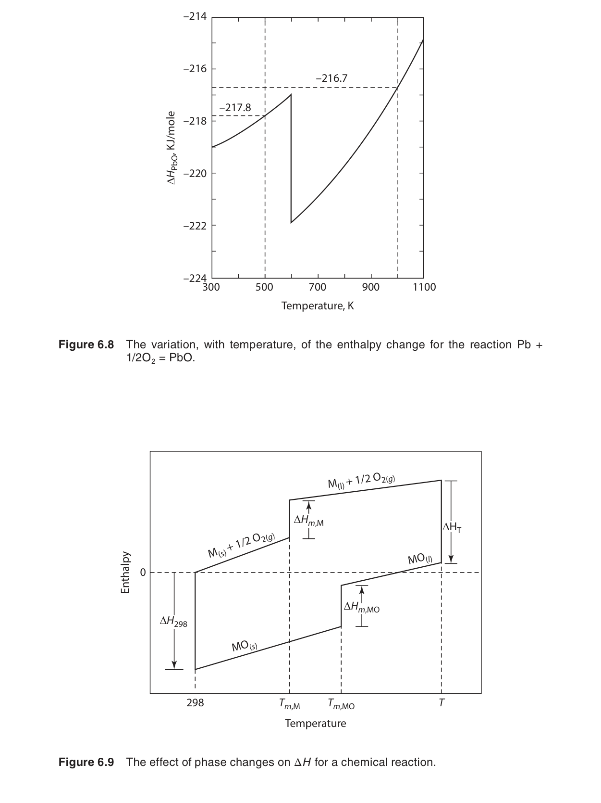
📐 推導 6.5：絕對熵的分段積分——完整計算流程
目標：計算 $S^\circ(T)$，從 $T = 0$ K 到任意 $T$，例如 298 K。
輸入數據：低溫 $C_P$ 測量值（15 K 以上），相變溫度和相變焓，$C_P(T)$ 經驗多項式（室溫以上）。
步驟 1——德拜 $T^3$ 外插（0 → 15 K）：
在極低溫區，$C_P \approx C_V = aT^3$。係數 $a$ 由最低測量點確定：$a = C_P(T_{\min}) / T_{\min}^3$。
$S_{0\to 15} = \displaystyle \int_0^{15} \frac{aT^3}{T} dT = \int_0^{15} aT^2 dT = \frac{a}{3}(15)^3 = \frac{1}{3} C_P(15\ \text{K})$
例如，若 $C_P(15\ \text{K}) = 0.45\ \text{J/mol·K}$，則 $S_{0\to 15} = 0.15\ \text{J/mol·K}$。
步驟 2——實驗數據數值積分（15 K → $T_1$）：
使用梯形法則或 Simpson 法則對 $\int C_P/T\,dT$ 進行數值積分。若測量間距夠密（每 1–2 K 一個點），梯形法則即可達到優於 0.1% 的精度。
$\displaystyle \int_{T_a}^{T_b} \frac{C_P}{T} dT \approx \sum_{i} \frac{C_{P,i} + C_{P,i+1}}{2} \cdot \frac{T_{i+1} - T_i}{T_i}$
步驟 3——相變貢獻（如有）：
在每個相變溫度 $T_{\text{tr}}$，加入 $\Delta S_{\text{tr}} = \Delta H_{\text{tr}} / T_{\text{tr}}$。
步驟 4——高溫積分（$T_{\text{tr}} \to T$）：
若 $C_P(T)$ 有經驗多項式，可直接解析積分：
$\displaystyle \int \frac{C_P}{T} dT = \int \left( \frac{a}{T} + b + \frac{c}{T^3} + dT \right) dT = a\ln T + bT - \frac{c}{2T^2} + \frac{d}{2} T^2$
完整結果：$S^\circ(T) = S_{0\to 15} + \int_{15}^{T} \frac{C_P}{T} dT + \sum \frac{\Delta H_{\text{tr}}}{T_{\text{tr}}}$
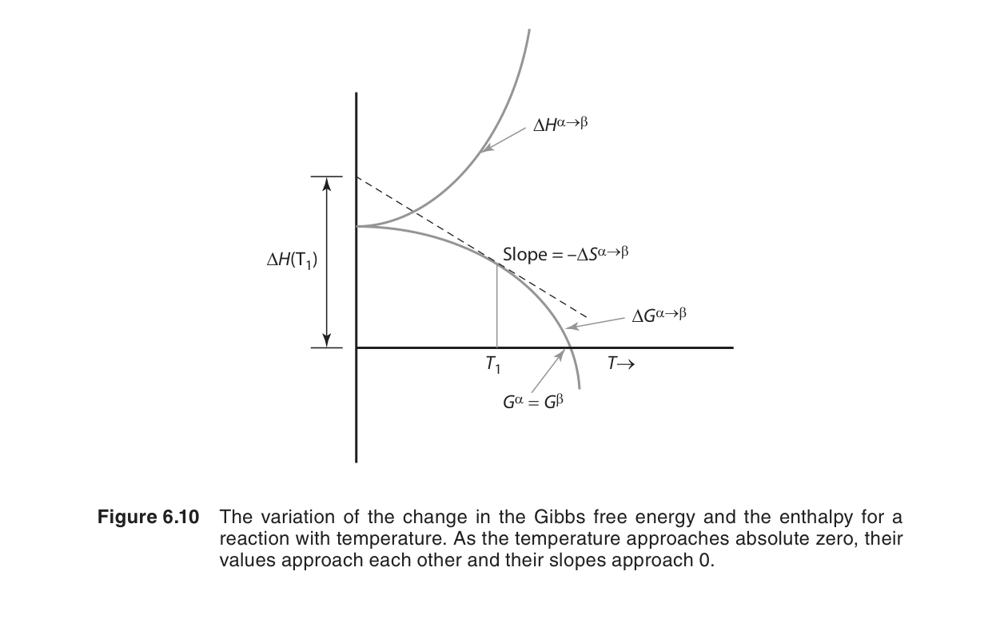
例題 6.5：為什麼低溫資料對熵特別敏感？
熵積分是 $\int C_P/T\,dT$，低溫區的同一個 $C_P$ 誤差會被 $1/T$ 放大。
若忽略 0 到 15 K 的德拜外插，焓誤差可能很小，但熵誤差會直接影響 $\Delta G=\Delta H-T\Delta S$。
這就是低溫熱容量測量在第三定律資料表中不可替代的原因。
跨章關聯：Boltzmann 分布與愛因斯坦模型（第四章）
本節的愛因斯坦模型直接使用了第四章的 Boltzmann 分布。回憶第四章的基本公式：在熱平衡下，系統處於能量 $\varepsilon_i$ 的機率為 $p_i = e^{-\varepsilon_i/k_B T} / \sum_j e^{-\varepsilon_j/k_B T}$。在推導 6.1 中，我們正是利用這個分布計算了諧振子的平均能量 $\langle\varepsilon\rangle = \sum_n \varepsilon_n p_n$，然後對溫度求導得到 $C_V$。沒有第四章的統計力學基礎，就無法推導愛因斯坦和德拜模型的 $C_V$ 公式——這是統計熱力學在材料科學中最經典的應用之一。
殘留熵的統計力學解釋
如前所述，殘留熵的產生源於 0 K 時晶體中殘留的微觀無序。Boltzmann 公式 $S = k_B \ln \Omega$ 提供了精確的定量描述：
📐 推導 6.6：殘留熵——從 Boltzmann 公式 $S = k_B \ln W$ 出發
物理圖像：考慮 $N$ 個 CO 分子形成的晶體。每個 CO 分子在晶格位置上可以有兩種取向：C≡O 或 O≡C。如果這兩種取向的能量完全相同（或能量差 $\ll k_B T$ 但在 0 K 時被凍結），則每個分子有兩個等可能的取向。
步驟 1——微觀態數：$N$ 個分子，每個 2 種取向，總微觀態數 $\Omega = 2^N$。
步驟 2——殘留熵：$S = k_B \ln \Omega = k_B \ln(2^N) = N k_B \ln 2$
對於一莫耳（$N = N_A$）：$S = N_A k_B \ln 2 = R \ln 2 \approx 5.76\ \text{J/mol·K}$
其他實例：
- 冰（H₂O 冰 Ih）：實驗測得殘留熵約 $3.4\ \text{J/mol·K}$。Pauling 的計算：每個水分子有 6 種可能的氫鍵構型，但需滿足 Bernal–Fowler 規則（每個氧原子周圍有兩個近質子和兩個遠質子），平均微觀態數 $\Omega \approx (3/2)^N$，因此 $S \approx R \ln(3/2) \approx 3.37\ \text{J/mol·K}$——與實驗完美吻合。
- 一氧化二氮（N₂O）：類似於 CO，殘留熵 $R\ln 2$。
- 混合晶體（如 (NH₄)₂SO₄）：殘留熵來自 NH₄⁺ 離子的取向無序。
如何從量熱實驗「看到」殘留熵：
量熱實驗測得 $C_P(T)$ 從很低溫度到室溫，積分得到 $S_{\text{cal}}(T) = \int_0^T C_P/T\,dT$。將 $S_{\text{cal}}$ 外插到 $T \to 0$ 的截距即為殘留熵。如果這個截距不為零，說明低於最低測量溫度 $T_{\min}$ 以下仍有未被捕獲的無序自由度。因此殘留熵的測量精度直接取決於 $T_{\min}$ 有多低——這也是為什麼低溫熱容量測量需要將溫度降到 1 K 以下。
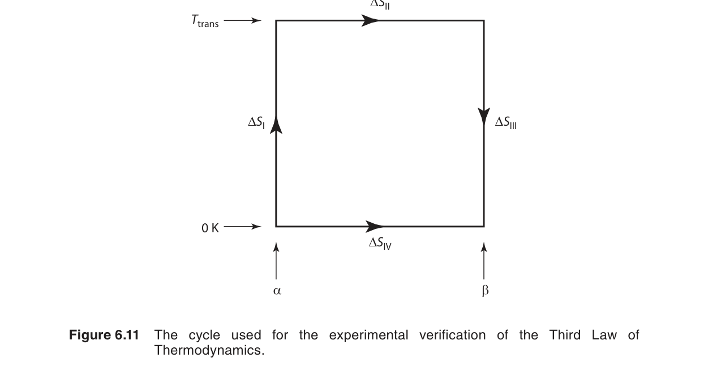
6.6 第三定律的實驗驗證（Experimental Verification of the Third Law）
- 第三定律可由低溫量熱、相變熵與光譜熵互相比對驗證。
- 熱化學熵與光譜熵的差異常揭示殘留熵。
- 低溫 $T^3$ 外插是把有限測量延伸到 0 K 的必要步驟。
第三定律的一個可直接驗證的預測是：對於任何等溫過程，當 $T \to 0$ 時 $\Delta S \to 0$。這意味著低溫下不同相的熵應該收斂到相同的值（零）。
實驗驗證方法 1——同素異形體轉變：測量兩個不同固相的 $C_P(T)$，分別從 0 K 積分到轉變溫度。如果第三定律正確，兩個積分的差值應該等於 $\Delta H_{\text{tr}}/T_{\text{tr}}$。對於硫的斜方晶→單斜晶轉變，實驗結果與理論預測高度一致——差值在實驗誤差範圍內。
實驗驗證方法 2——光譜法比較：對於氣體，熵也可以從光譜數據（分子轉動和振動頻率）使用統計力學方法獨立計算。比較「熱化學熵」（從 $C_P$ 積分）和「光譜熵」（從分子常數計算配分函數），兩者在大多數情況下吻合到優於 0.1%——這是第三定律最嚴格的驗證。
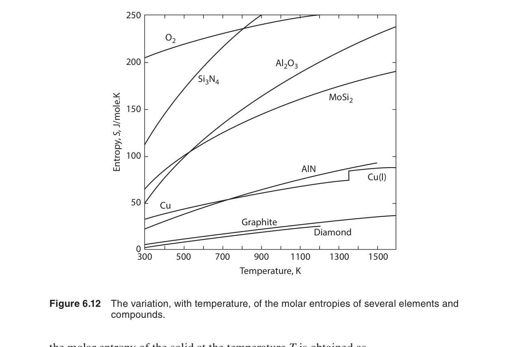
更詳細的實驗驗證案例
案例 A——鉛的熱化學熵 vs 光譜熵：鉛（Pb）因其低 $\Theta_D$（105 K）成為驗證第三定律的理想物質。低溫 $C_P$ 測量可輕鬆達到 1 K 以下（$T/\Theta_D < 0.01$），此時 $C_P$ 已完全遵循 $T^3$ 行為。將 $C_P/T$ 從 0 K 積分到 298 K，得到的 $S^\circ(298) = 64.80\ \text{J/mol·K}$。從光譜數據計算的配分函數給出 $S^\circ(298) = 64.82\ \text{J/mol·K}$——兩者差距僅 0.02 J/mol·K，遠小於實驗誤差（∼0.1 J/mol·K）。
案例 B——金剛石（鑽石）的特殊地位：金剛石的 $\Theta_D = 2230$ K，意味著在室溫下 $T/\Theta_D \approx 0.13$，仍處在德拜 $T^3$ 區域。這使得金的 $C_P$ 在室溫下僅約 6 J/mol·K（遠低於 $3R$），是古典 Dulong–Petit 定律最著名的「例外」。但德拜模型精確預測了其 $C_P(T)$ 曲線形狀——從 0 K 到 >2000 K，與實驗數據完全一致。金剛石的案例有力地證明了德拜模型和第三定律的有效性。
案例 C——殘留熵的經典案例：下表比較了幾種物質的熱化學熵和光譜熵，殘留熵的差值直接揭示了低溫晶體中的無序：
| 物質 | $S_{\text{cal}}^\circ(298)$ (J/mol·K) | $S_{\text{spec}}^\circ(298)$ (J/mol·K) | 差值 (J/mol·K) | 殘留熵來源 |
|---|---|---|---|---|
| CO | 197.7 | 193.4 | 4.3 | 分子取向無序 ($R\ln 2 \approx 5.76$) |
| N₂O | 220.0 | 215.1 | 4.9 | 分子取向無序 ($R\ln 2 \approx 5.76$) |
| H₂O（冰） | 44.3 | 41.9 | 2.4 | 氫鍵質子無序 ($R\ln\frac32 \approx 3.37$) |
| D₂O（重冰） | 46.3 | 44.1 | 2.2 | 氫鍵質子無序 ($R\ln\frac32 \approx 3.37$) |
注意：表中的實驗差值略小於理論預測值，原因是低溫測量通常只到 10–15 K，低於此溫度的殘留熵貢獻未被完全捕獲——這恰恰說明了低溫 $C_P$ 測量的極限和德拜 $T^3$ 外插的重要性。
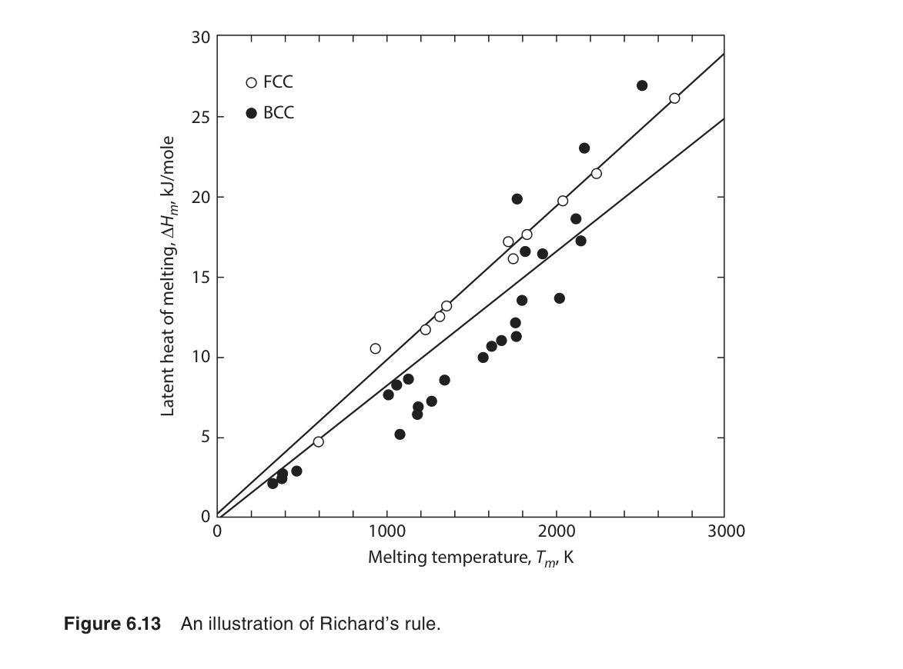
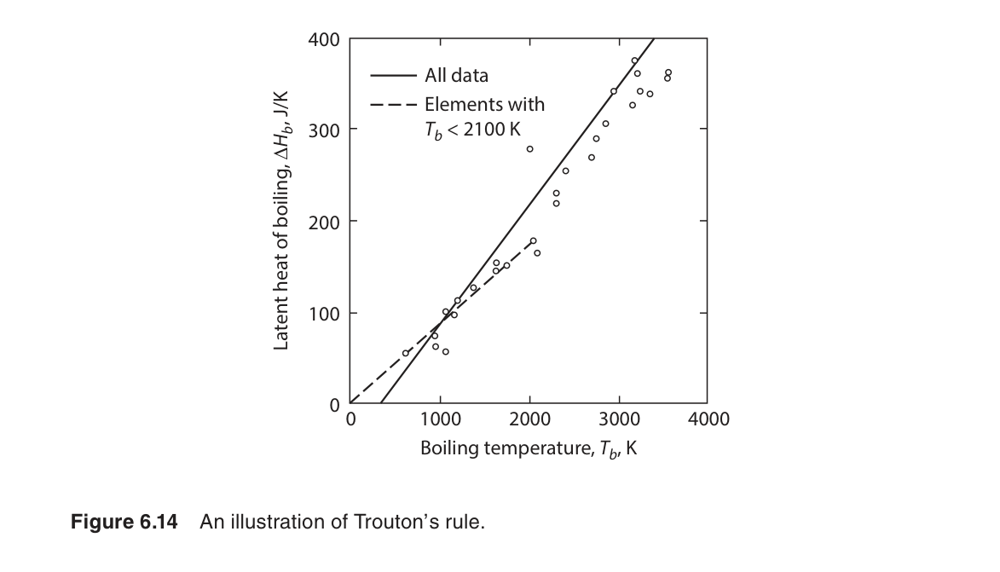
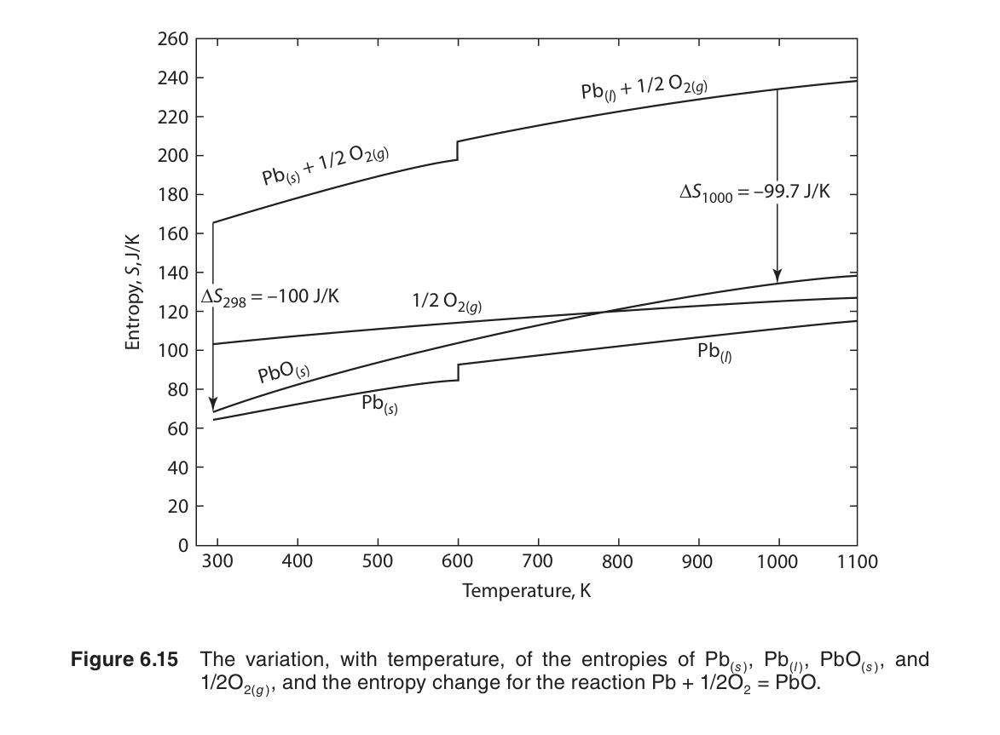
例題 6.6：由熵差推測殘留無序
若某分子晶體的量熱熵比光譜熵大約 $5.5\ \text{J/mol·K}$。
這個數值接近 $R\ln2=5.76\ \text{J/mol·K}$，可推測每個分子在晶格中有兩種近似等能取向。
接著應檢查晶體結構是否允許取向無序，而不是只調整量熱數據。
第三定律的更深遠後果
除了解釋殘留熵，第三定律還有以下重要的理論後果：
- 絕對零度的不可達性：通過有限次操作無法將系統的溫度降至絕對零度。這是第三定律的另一種表述——因為 $T \to 0$ 時 $\Delta S \to 0$，任何降溫過程的效率都會趨近於零。
- 低溫物理性質的約束：第三定律要求 $T \to 0$ 時 $C_P \to 0$、$\alpha \to 0$（熱膨脹係數為零）、$(\partial P/\partial T)_V \to 0$。這些預測均被低溫實驗所證實。
- 化學平衡的溫度依賴：結合 $S(0) = 0$ 和 Gibbs–Helmholtz 方程式，第三定律預測 $T \to 0$ 時 $\Delta G^\circ \to \Delta H^\circ$——即低溫下反應的方向完全由焓變決定。
6.7 壓力對焓和熵的影響（The Influence of Pressure on Enthalpy and Entropy）
- 壓力修正可由第五章 Maxwell 關係導出。
- 凝聚相在低壓下常可忽略壓力效應，但 GPa 條件下不可忽略。
- 氣體的熵對壓力高度敏感，需另由氣體章節完整處理。
到目前為止我們只討論了溫度對 $H$ 和 $S$ 的影響。壓力的影響可以通過第五章的 Maxwell 關係處理：
其中 $\alpha = (1/V)(\partial V/\partial T)_P$ 是熱膨脹係數。
對固體和液體：$\alpha$ 通常很小（∼$10^{-5}$ 到 $10^{-4}\ \text{K}^{-1}$），$V$ 也很小，因此壓力對 $H$ 和 $S$ 的影響在常規壓力下（<100 atm）通常可以忽略。例如，對於 1 mol 鐵（$V \approx 7.1\ \text{cm}^3$，$\alpha \approx 3.5 \times 10^{-5}\ \text{K}^{-1}$），壓力從 1 atm 增加到 100 atm 時，$\Delta S \approx -0.003\ \text{J/mol·K}$——完全可以忽略。
對氣體：壓力效應巨大且不可忽略（第八章的焦點）。對於理想氣體，$V = RT/P$，$\alpha = 1/T$，因此 $(\partial H/\partial P)_T = 0$（理想氣體的焓與壓力無關），但 $(\partial S/\partial P)_T = -R/P$——壓縮氣體顯著降低其熵。
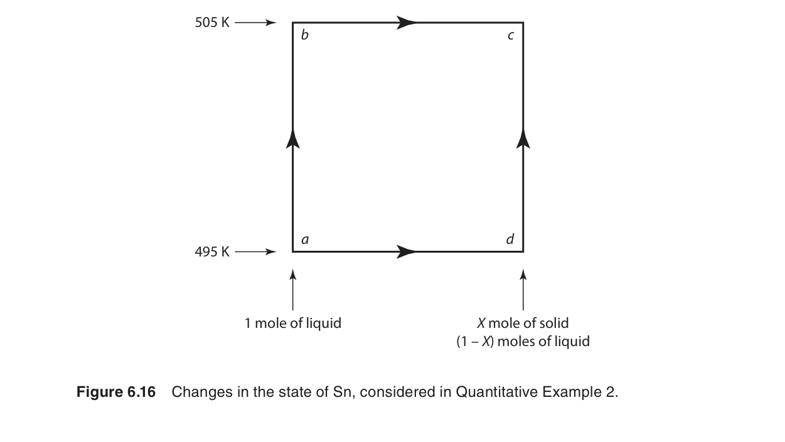
壓力效應的深入分析與實際數據
定量評估——壓力對固體焓的貢獻：
對 Eq (6.11) 從 $P_1$ 到 $P_2$ 積分：
對於固體，$V$ 和 $\alpha$ 近似為常數（在 moderate 壓力範圍內），因此 $\Delta H_P \approx V(1 - T\alpha)(P_2 - P_1)$。
實際數據——幾種材料在 1 GPa 壓力下的焓變：
| 材料 | $V$ (cm³/mol) | $\alpha$ (10⁻⁵ K⁻¹) | $\Delta H$ (1 GPa, 300 K) (J/mol) | 對比：$\Delta H$ 升溫 100 K |
|---|---|---|---|---|
| Al | 10.0 | 6.9 | ~860 | ~2500 |
| Cu | 7.1 | 5.0 | ~600 | ~2400 |
| Fe | 7.1 | 3.5 | ~640 | ~2500 |
| MgO | 11.2 | 3.1 | ~1020 | ~4500 |
| NaCl | 27.0 | 12.0 | ~2000 | ~5000 |
可以看出，即使在 1 GPa（約 10,000 atm）的極高壓力下，固體的 $\Delta H_P$ 仍比升溫 100 K 的 $\Delta H_T$ 小一個量級左右。但在地球深部（下地幔壓力 > 100 GPa）或行星內部條件下，壓力效應變得主導——例如地球內核的鐵在 360 GPa 下，壓力對焓的貢獻與溫度效應相當。
高壓材料科學：在地球內部（GPa 級壓力）或高壓合成（如人造金剛石）條件下，壓力對固體 $H$ 和 $S$ 的效應不能再忽略。在這些情況下，需要使用狀態方程式（如 Birch–Murnaghan）配合 Maxwell 關係進行計算。
跨章關聯：Maxwell 關係與壓力效應（第五章）
Eq (6.11) 和 Eq (6.12) 的推導直接來自第五章的 Maxwell 關係。具體來說，從 Helmholtz 自由能 $A$ 的恰當微分 $dA = -SdT - PdV$ 出發，其混合偏導數相等給出 $(\partial S/\partial V)_T = (\partial P/\partial T)_V$。結合鏈式法則和 $H = U + PV$ 的定義，可以導出 Eq (6.11)。這是一個完美的跨章應用：第五章的純粹數學關係（Maxwell 方程）到了第六章變成了計算壓力對焓和熵影響的實用工具。如果沒有第五章的理論基礎，這些重要的壓力效應公式將無從推導。
例題 6.7：估算固體壓力修正是否重要
室溫下 1 mol 金屬的摩爾體積約 $10^{-5}\ \text{m}^3/\text{mol}$，壓力升高 1 GPa。
粗估 $P\Delta V\approx10^9\times10^{-5}=10^4\ \text{J/mol}$ 的上限，但實際焓修正還要乘上熱膨脹項與壓縮效應。
這已經接近化學反應熱的量級，因此 GPa 條件不能用常壓資料草率外推。
常見誤區
自我檢核
檢核 1：為什麼鑽石室溫熱容遠低於 $3R$？
因為鑽石 $\Theta_D$ 很高，室溫仍相當於低 $T/\Theta_D$ 區域，許多振動模態尚未熱激發。
檢核 2：計算 $\Delta H^\circ(1200)$ 需要哪些資料？
需要 $\Delta H^\circ(298)$，各反應物與產物的 $C_P(T)$ 係數，並檢查 298 到 1200 K 是否跨相變。
檢核 3：第三定律為何能給出絕對熵？
它設定完美晶體在 0 K 的熵為零，因此可由 0 K 起積分 $C_P/T$ 到目標溫度。
檢核 4：何時壓力效應不可忽略？
凝聚相在 GPa 級壓力、高壓合成與地球深部條件下不可忽略；氣體則在一般壓力變化下也常需納入熵壓力項。
延伸閱讀
- 低溫熱容量：進一步閱讀 Debye model、Sommerfeld electronic heat capacity 與 $C_P/T$ 對 $T^2$ 作圖。
- 資料庫連結：比較 JANAF、Barin 或 SGTE 熱化學資料中 $C_P(T)$、$H_T-H_{298}$、$S_T$ 欄位的來源。
- 材料應用：把本章流程接到 Ellingham diagram，理解氧化還原反應的高溫斜率為何由熵控制。
- 固態物理連結：將 $\Theta_D$ 與聲速、彈性模數、熱導率、低溫聲子散射連在一起。
本章摘要
- 熱容理論：Dulong–Petit 給出 $C_V \approx 3R$（古典）。愛因斯坦模型引入量子化→低溫下降（指數）。德拜模型使用連續頻譜→低溫 $T^3$ 定律（與實驗完美吻合）。$\Theta_D$ 反映晶格剛性。
- 經驗 $C_P$：$C_P = a + bT + cT^{-2} + dT^2$。從實驗數據擬合，是計算 $\Delta H$ 和 $\Delta S$ 的輸入。
- Kirchhoff 定律：$(\partial\Delta H/\partial T)_P = \Delta C_P$ 和它的積分形式。跨越相變時必須分段積分並加入 $\Delta H_{\text{tr}}$。
- 第三定律：$S(0\ \text{K}) = 0$（完美晶體）。提供熵的絕對參考點。非完美晶體有殘留熵。
- 絕對熵計算：$S^\circ(T) = \int_0^{T_{\text{low}}} + \int_{T_{\text{low}}}^T + \sum \Delta H_{\text{tr}}/T_{\text{tr}}$。低溫區使用德拜 $T^3$ 外插。
- 壓力效應：$(\partial H/\partial P)_T = V(1-T\alpha)$，$(\partial S/\partial P)_T = -V\alpha$。固體/液體通常可忽略（除非 GPa 級壓力）。
- 跨章總結：本章的 Kirchhoff 定律和絕對熵計算是第十一章 $\Delta G^\circ(T)$ 計算的數據基礎；愛因斯坦模型的推導直接使用第四章的 Boltzmann 分布；壓力效應公式來自第五章的 Maxwell 關係。